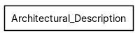
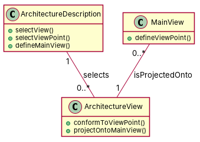

R1: This model contains a package called "Architectural description" which contains a component called "Architecture". R2: The package "ArchitecturalDescription" contain the component "ArchitectureDescription" R3: "ArchitectureView" is a component included in package "ArchitecturalDescription" R4: "ArchitectureViewPoint" is a component of the package "ArchitecturalDescription" R5: "MainView" is a component of the package "ArchitecturalDescription" R6: "ArchitectureDescription" package contains components called "ModelElement". R7: The package "Architectural Description" includes a component named "Architecture" and a component called "Architecture Description". An "Architecture" is described by exactly one "Architecture Description". An "Architecture Description" does not know the "Architecture" it describes. R8: The packahe "ArchitecturalDescription" contains : component "ArchitectureDescription" and component "ArchitectureView". An "ArchitectureDescription" selects one or more "ArchitectureView". R9: Package "ArchitecturalDescription" contains component "ArchitectureView" which is selected by one or more "ArchitectureDescription" (another component). R10: The package "Architecture Description" contains two components. Component "ArchitectureView" conforms to one or more components "ArchitectureViewPoint". An "ArchitectureViewPoint" does not know the "ArchitectureView" that conform to it. R11: In package "ArchitecturalDescription" there are several components, including "ArchitectureViewPoint" and "MainView". The former defines exactly one latter. R12: a "MainView" is projected onto one or more "ArchitectureView". Both components are in package "ArchitecturalDescription"
Red, struck-through: removed by ambiguity removal; green: added.
| actors (0 → 0) |
|---|
| classes (8 → 6) |
|---|
| ArchitecturalDescription |
| Architecture |
| ArchitectureDescription |
| ArchitectureView |
| Architectureview |
| Architectureviewpoint |
| Component |
| MainView |
| attributes (0 → 0) |
|---|
| relations (8 → 3) |
|---|
| association: ArchitectureDescription -> Architecture |
| association: ArchitectureDescription -> Architectureview |
| association: Architectureviewpoint -> ArchitectureView |
| generalization: ArchitectureView -> Component |
| generalization: Architectureviewpoint -> Component |
| generalization: MainView -> Component |
| has: ArchitecturalDescription -> ArchitectureView |
| has: ArchitecturalDescription -> Component |
| id | req | type | cue | status | readings / explanation |
|---|---|---|---|---|---|
| A1 | R7 | referential | it | resolved | An 'Architecture Description' does not know the 'Architecture' it describes.; An 'Architecture Description' does not know the 'Architecture View' it describes. The sentence is ambiguous as it could refer to either an 'Architecture' or an 'Architecture View'. |
| A2 | R8 | quantifier | one or more | resolved | An 'ArchitectureDescription' selects one 'ArchitectureView'.; An 'ArchitectureDescription' selects one or more 'ArchitectureView'. The sentence is ambiguous as it could mean selecting one or more 'ArchitectureView'. |
| A3 | R9 | quantifier | one or more | resolved | Package 'ArchitecturalDescription' contains one 'ArchitectureView'.; Package 'ArchitecturalDescription' contains one or more 'ArchitectureView'. The sentence is ambiguous as it could mean containing one or more 'ArchitectureView'. |
| A4 | R10 | quantifier | one or more | resolved | Component 'ArchitectureView' conforms to one 'ArchitectureViewPoint'.; Component 'ArchitectureView' conforms to one or more 'ArchitectureViewPoint'. The sentence is ambiguous as it could mean conforming to one or more 'ArchitectureViewPoint'. |
| A5 | R10 | referential | it | resolved | An 'ArchitectureViewPoint' does not know the 'ArchitectureView' that conform to it.; An 'ArchitectureViewPoint' does not know the 'ArchitectureViewPoint' that conform to it. The sentence is ambiguous as it could refer to either an 'ArchitectureView' or an 'ArchitectureViewPoint'. |
| A6 | R11 | quantifier | several | resolved | In package 'ArchitecturalDescription' there are several 'ArchitectureViewPoint'.; In package 'ArchitecturalDescription' there are several 'Component'.; In package 'ArchitecturalDescription' there are several 'ArchitectureViewPoint' and 'Component'.; In package 'ArchitecturalDescription' there are several 'ArchitectureView'.; In package 'ArchitecturalDescription' there are several 'MainView'.; In package 'ArchitecturalDescription' there are several 'ArchitectureViewPoint', 'Component', 'ArchitectureView', and 'MainView'.; In package 'ArchitecturalDescription' there are several 'ArchitectureViewPoint', 'Component', and 'MainView'.; In package 'ArchitecturalDescription' there are several 'ArchitectureView', 'MainView'.; In package 'ArchitecturalDescription' there are several 'ArchitectureViewPoint', 'Component', 'ArchitectureView', 'MainView', and other components. The sentence is ambiguous as it could refer to several 'ArchitectureViewPoint', 'Component', 'ArchitectureView', 'MainView', or a combination of these. |
| A7 | R12 | actor | one or more | resolved | a 'MainView' is projected onto one 'ArchitectureView'.; a 'MainView' is projected onto one or more 'ArchitectureView'.; a 'MainView' is projected onto several 'ArchitectureView'.; a 'MainView' is projected onto one or more 'ArchitectureView' and 'Component'.; a 'MainView' is projected onto several 'ArchitectureView' and 'Component'.; a 'MainView' is projected onto one or more 'ArchitectureView' and 'Component' and other views.; a 'MainView' is projected onto several 'ArchitectureView' and 'Component' and other views. The sentence is ambiguous as it could refer to one or more 'ArchitectureView' and 'Component'. |
| A8 | R12 | actor | passive 'projected' without agent | resolved | a 'MainView' is projected onto one or more 'ArchitectureView' by an actor.; a 'MainView' is projected onto one or more 'ArchitectureView' without an actor.; a 'MainView' is projected onto one or more 'ArchitectureView' by several actors.; a 'MainView' is projected onto one or more 'ArchitectureView' by an actor and other actors.; a 'MainView' is projected onto one or more 'ArchitectureView' by an actor and other actors and other views.; a 'MainView' is projected onto one or more 'ArchitectureView' by several actors and other actors.; a 'MainView' is projected onto one or more 'ArchitectureView' by several actors and other actors and other views. The sentence is ambiguous as it could refer to the projection being done by an actor or without an actor. |


"""Code skeleton generated from the shared model of D2/Architectural_Description.
Every class and method records the requirement(s) it traces to."""
from __future__ import annotations
import dataclasses as _dc
import enum as _enum
import typing as _t
@_dc.dataclass
class ArchitectureDescription:
"""Source: R7, R8, R9, R10, R11"""
architectureViews: _t.List["ArchitectureView"] = _dc.field(default_factory=list)
def selectView(self) -> None:
"""Operation."""
raise NotImplementedError
def selectViewPoint(self) -> None:
"""Operation."""
raise NotImplementedError
def defineMainView(self) -> None:
"""Operation."""
raise NotImplementedError
@_dc.dataclass
class ArchitectureView:
"""Source: R7, R8, R9, R12"""
def conformToViewPoint(self) -> None:
"""Operation."""
raise NotImplementedError
def projectOntoMainView(self) -> None:
"""Operation."""
raise NotImplementedError
@_dc.dataclass
class MainView:
"""Source: R11, R12"""
architectureView: _t.Optional["ArchitectureView"] = None
def defineViewPoint(self) -> None:
"""Operation."""
raise NotImplementedError
| python_compiles | True |
|---|---|
| java_compiles | True |
| attribute_mismatches | 0 |
| method_mismatches | 0 |
| use_cases | 0 |
| use_cases_without_actor | 0 |
| use_cases_without_method | 0 |
| actors_without_use_case | 0 |
| relations_to_unknown_class | 0 |
| inconsistencies | 0 |
| inconsistency_rate | 0.0 |
| requirement_coverage | 0.5 |
| validator fixes | |
| assumptions for open ambiguities | [{"tag": "A3", "assumption": "The class 'ArchitectureView' is assumed to be part of the 'ArchitecturalDescription' package, even though it is not explicitly mentioned in the requirements."}] |
| element | P | R | F1 | TP/FP/FN |
|---|---|---|---|---|
| classes | 1.0 | 0.5 | 0.667 | 3/0/3 |
| attributes | 0.0 | 0.0 | 0.0 | 0/0/0 |
| relations | 1.0 | 0.286 | 0.444 | 2/0/5 |
| relations_strict | 1.0 | 0.286 | 0.444 | 2/0/5 |